ホーム ／ 無料動画
2025年 無料講座
YouTubeで一般公開している全19本です。第1回から順番に見ると、占いの全体像から十干十二支・インド占星術・AI鑑定へ進めます。
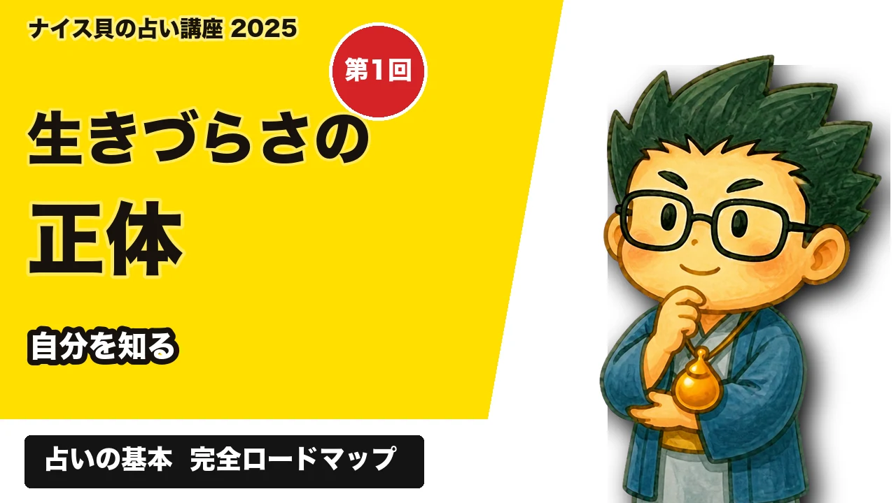
第1回 生きづらさは「みにくいアヒルの子現象」かも？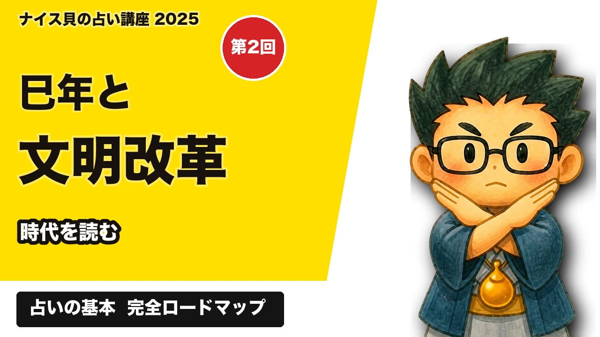
第2回 巳年は文明改革の時!? 第3回 数秘術入門講座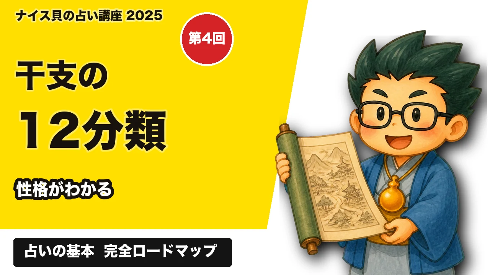
第4回 干支の十二分類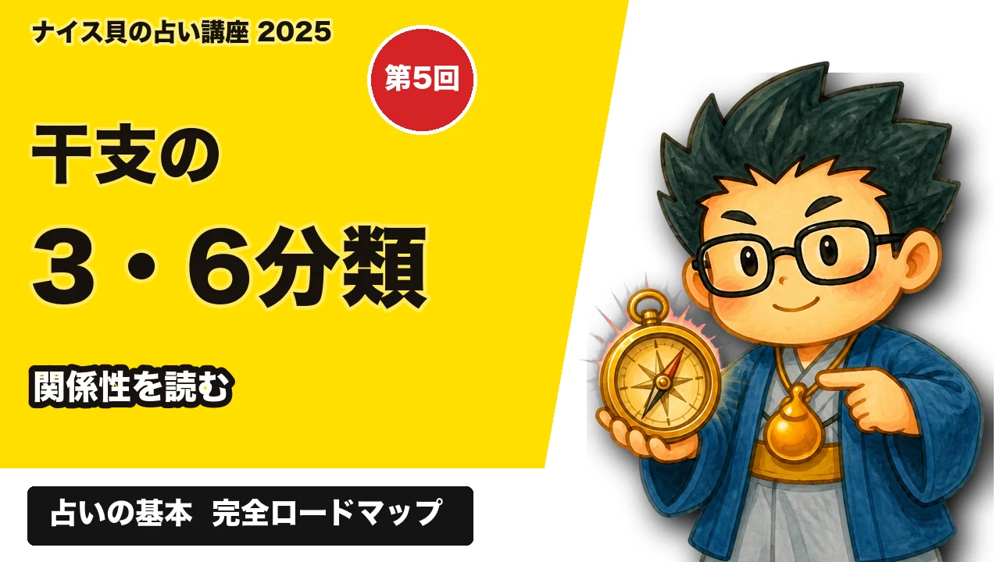
第5回 干支の三分類と六分類 第6回 干支の六十分類 第7回 会社占いと車占い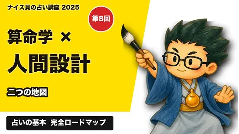
第8回 算命学とヒューマンデザイン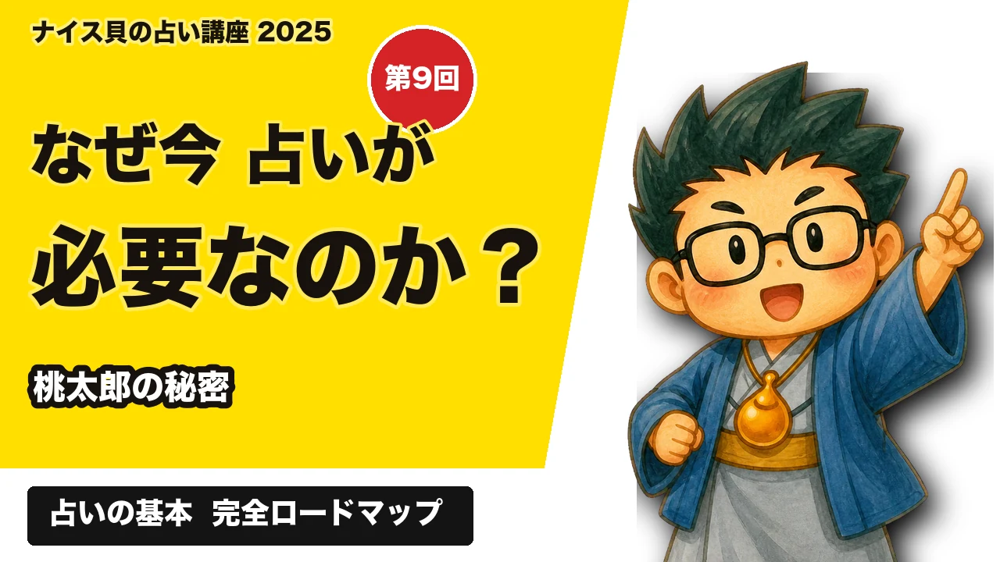
第9回 なぜ今「占い」が必要なのか？桃太郎の秘密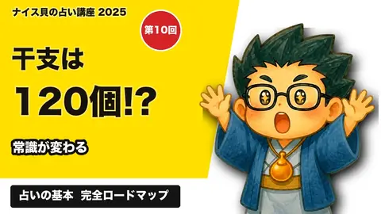
第10回 干支は120個ある!?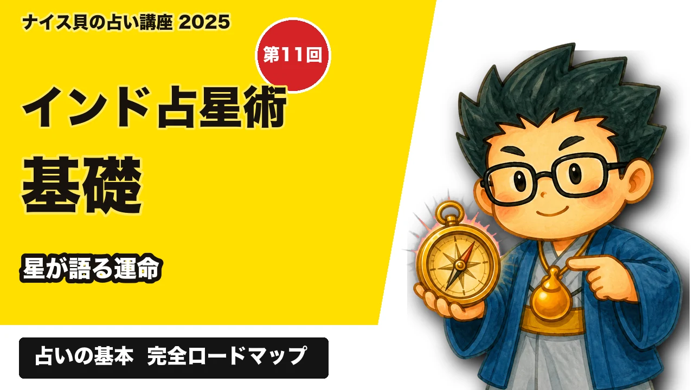
第11回 インド占星術の基礎の基礎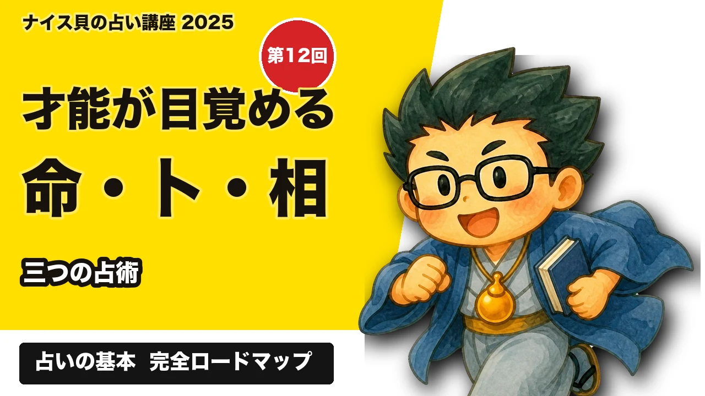
第12回 才能が目覚める命・卜・相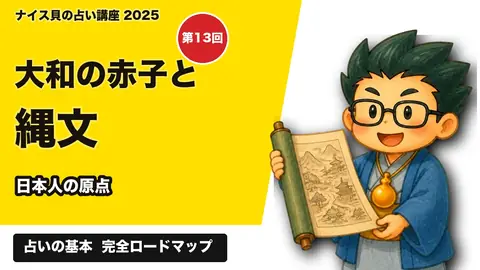
第13回 大和の赤子・縄文漬物・参議院選挙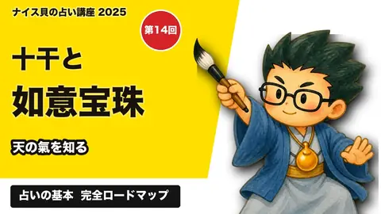
第14回 干支の秘密 十干と如意宝珠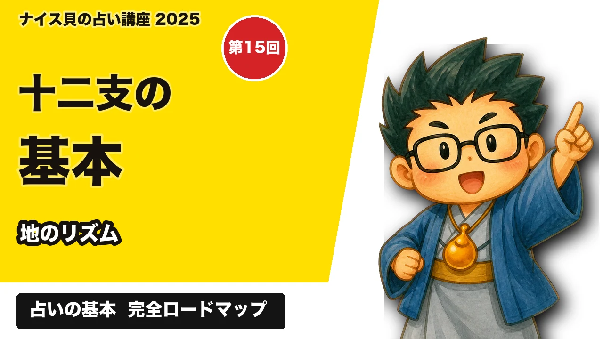
第15回 十二支の基本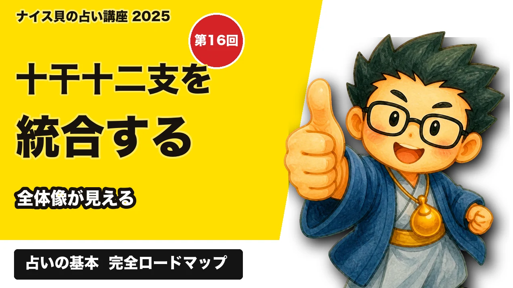
第16回 十干十二支の統合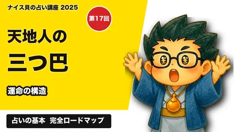
第17回 天地人の三つ巴について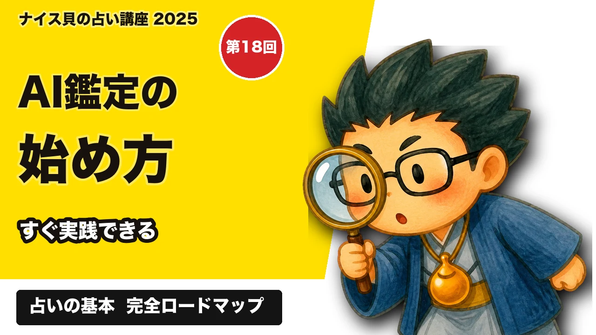
第18回 ナイス貝AI鑑定について｜算命学×インド占星術×AI鑑定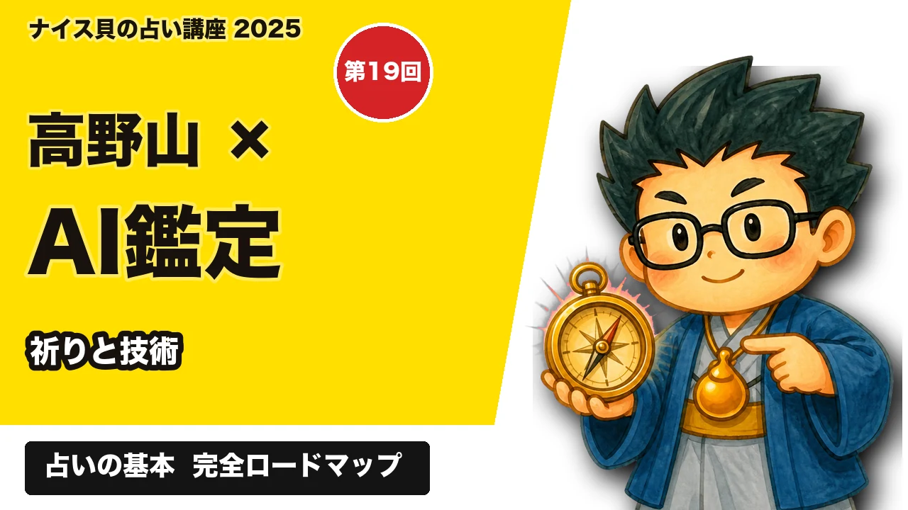
第19回 高野山とAI鑑定が世界を変える!? Geminiを使ったインド占星術の未来